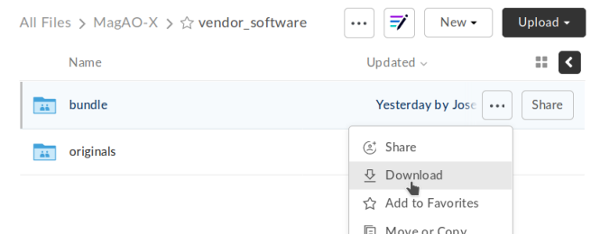

Instrument computer setup guide¶
The setup process for the instrument computers (ICC, RTC, AOC) is automated (to the extent possible) by scripts in the setup/ folder of magao-x/MagAOX.
Unfortunately, not everything can be automated when real hardware is involved. To set up a new instrument computer, follow the steps below. Once the BIOS and OS are setup, you can run the provisioning scripts.
The instrument computers use CentOS 7 for two reasons:
It has a long window of support, and will receive security and bug-fix updates until June 30, 2024.
It (or, equivalently, RHEL 7) is a supported platform for our more niche hardware like DMs and framegrabbers.
Once the hardware has been connected up, setup proceeds as follows.
BIOS¶
For all of AOC/ICC/RTC¶
Boot
|
-- Network Device BBS Priorities -- set all to "disabled"
-- Hard Drive BBS Priorities -- set "disabled" for all non-boot SSDs
Advanced
|
-- APM
|
-- Restore AC Power Loss [Power OFF]
-- ACPI Settings
|
-- Enable Hibernation [Disabled]
-- ACPI Suspend State [Suspend Disabled]
(Note that the BIOS likes to reshuffle boot order when drives appear and disappear in testing or RAID swapping. Disabling non-boot drives ensures it doesn’t accidentally try to boot from them.)
For ICC/RTC¶
AI Tweaker
|
-- Spread Spectrum [Disabled] {This is critical for allowing PCIe expanion to work}
Advanced
|
-- PCI Subsystem Settings
|
-- Above 4G Decoding [Enabled] {This is critical for allowing PCIe expansion to work}
IntelRCSetup
|
--Processor Configuration
|
-- DCU Mode [16KB 4Way With ECC] {This is critical for allowing PCIe expansion to work}
|
--Miscellaneous Configuration
|
-- Active Video [Onboard Device] {Prevents sending video to a GPU}
OS Installation¶
Boot into CentOS 7 x86_64 install media (ISOs here) and proceed with interactive installation following these choices.
Language¶
Language: English (United States)
Network & Hostname¶
In the box at lower left, fill in the machine name (i.e. exao1 for AOC, exao2 for RTC, exao3 for ICC).
For each Ethernet controller listed on the left, click to select and click “Configure” to bring up the settings, and select the “IPv4 Settings” panel.
If the IP address in the table from the Networking Doc is not “n/a (DHCP)”, select Method: “Manual” from the dropdown under “IPv4 Settings”.
In the “Addresses” panel, click “Add” and enter the appropriate address from the Networking Doc table under “Network Connections”.
To confirm the link works, Ctrl-Alt-F2 gets you to a command prompt.
Try pinging Google:
$ ping 8.8.8.8
...
# Hit Ctrl-C after a few seconds
^C
Verify “0% packet loss”.
And the MagAO-X internal router:
$ ping 192.168.0.1
# Hit Ctrl-C after a few seconds
^C
Verify “0% packet loss”.
To return to the main installer, hit Ctrl-Alt-F6.
Date & Time¶
Timezone: America/Phoenix
Partitions¶
Select all disks
Select “I will configure partitioning”
On 2x 512 drives:
500 MiB
/boot- RAID 116 GiB swap - RAID 1
The rest as
/- RAID 1
On the data drives (should be 3 or more identical drives):
All space as
/data- RAID 5
Detailed steps¶
If this is a reinstall:
Click on the arrow next to “CentOS Linux…” to expand the list of existing partitions.
Click one to select and click the
-button at the bottom of the listCheck the box saying
Delete all filesystems which are only used by CentOS Linux ...and confirm
Choose partitioning scheme = Standard Partition in drop down menu
Then press
+button:Mount Point:
/bootDesired Capacity:
500 MiBNow press
ModifySelect the 2x 500 GB O/S drives (Ctrl-click)
Press select
Device Type:
RAID - RAID 1File System:
XFS
Press
Update SettingsThen press
+button:Mount Point: swap
Desired Capacity: 16 GiB
Now press
ModifySelect the 2 500 GB O/S drives (Ctrl-click)
Press select
Device Type:
RAID - RAID 1File System:
XFSPress
Update Settings
Then press
+button:Mount Point:
/Desired Capacity: blank
Now press
ModifySelect the 2x 500 GB O/S drives (Ctrl-click)
Press select
Device Type:
RAID - RAID 1File System:
XFSChange Desired Capacity to blank (again)
Press Update Settings
should be using all available space for
/
Then press
+button:Mount Point:
/dataDesired Capacity: blank
Now press
ModifyCtrl-click to select all the data drives (>500GB)
Press select
Device Type:
RAID - RAID 5File System:
XFSChange Desired Capacity to blank (again)
Press Update Settings
Should now have the full capacity for RAID 5 (N-1)
If you are prompted for a location to install the UEFI boot loader, you have somehow booted in UEFI mode instead of Legacy Boot / BIOS mode. (This has been observed booting from a liveUSB, despite UEFI boot being disabled in BIOS, but it goes away after reordering boot options in the BIOS interface and attempting to boot again.)
Software¶
ICC/RTC:
From the list on the Left:
Select “Minimal install”
From the list on the right:
Select “Development Tools”
Select “Debugging Tools”
Select “System Administration Tools”
AOC:
From the list on the Left:
Select “KDE Plasma Workspaces”
From the list on the right:
Select “Development Tools”
Begin the installation¶
Users¶
Set
rootpasswordCreate normal (admin) user account for use after reboot
After OS installation¶
Note: For AOC, multiple monitors seem to confuse the default NVIDIA drivers. Stick to the VGA output until the NVIDIA drivers are set up (see below).
Update¶
Log in as
rootRun
yum update -y
Check RAID status¶
Check RAID mirroring status: cat /proc/mdstat. On new installs, it takes some time for the initial synchronization of the drives. (Like, “leave it overnight” time.)
Configure network interface naming¶
SystemD, udev, and Dell have conspired to implement something called “predictable network interface names” that could more accurately be called “unpredictable network interface names”.
To prevent the network interface names from changing every time we move a PCIe card in our instrument, we use the almost-undocumented Scheme 4 naming scheme, where the entire hardware MAC address is placed in the interface name to guarantee it never changes.
To enable this scheme, follow the procedure from this ServerFault answer.
sudo cp /usr/lib/udev/rules.d/80-net-name-slot.rules /etc/udev/rules.dEdit
/etc/udev/rules.d/80-net-name-slot.rulesto replaceNAME=="", ENV{ID_NET_NAME_ONBOARD}!="", NAME="$env{ID_NET_NAME_ONBOARD}" NAME=="", ENV{ID_NET_NAME_SLOT}!="", NAME="$env{ID_NET_NAME_SLOT}" NAME=="", ENV{ID_NET_NAME_PATH}!="", NAME="$env{ID_NET_NAME_PATH}"
with
NAME=="", ENV{ID_NET_NAME_MAC}!="", NAME="$env{ID_NET_NAME_MAC}"
Reboot
Configure network connections¶
Names for network interfaces are now tied to their hardware MAC address, not their location on the PCI bus. The flip side is that replacing a NIC will require repeating the below process, probably from a seat at the computer. (However, this happens much less often than rearranging GPUs and confusing NetworkManager with renumbered enXpY devices.)
Use
ip aornmclito verify the new network names. For example, thisnmclioutput is from RTC:$ nmcli enx2cfda1c6db1b: connected to www-lco "Intel I210" ethernet (igb), 2C:FD:A1:C6:DB:1B, hw, mtu 1500 ip4 default inet4 200.28.147.222/24 route4 200.28.147.0/24 route4 0.0.0.0/0 inet6 fe80::e645:b705:d502:3b34/64 route6 fe80::/64 route6 ff00::/8 enx2cfda1c6db1a: connected to instrument "Intel I210" ethernet (igb), 2C:FD:A1:C6:DB:1A, hw, mtu 1500 inet4 192.168.0.11/24 route4 192.168.0.0/24 inet6 fe80::58e3:d9ad:61be:f235/64 route6 fe80::/64 route6 ff00::/8 [...]If the strings
connected to www-lcoorwww-ua, andconnected to instrumentappear in thenmclioutput, you may be finished. If the connection profiles do not automatically find the renamed devices, read on.Unplug the instrument interface and run
nmcliagain, noting which of the interfaces shows up as disconnectedCopy the full name (
enxaabbccddeeff) of the interface that is showing up as connectedIn
sudo nmtui, rename or delete connections as necessary until there is onlywww-ua,www-lco, andinstrumentEdit the
www-*connections to ensure the “Device” field is set to the interface name you just copiedCopy the full name for the instrument interface, plug its cable back in, and repeat the last step for the
instrumentconnectionActivate the appropriate connections in
nmtui(or withnmcli con down www-lco; nmcli con up www-ua; nmcli con up instrument, swapwww-uaandwww-lcoif necessary)Choose
Edit a connectioninnmtuiHighlight
instrumentand hitEnterUnder
IPv4 CONFIGURATIONensureNever use this network for default routeis checked with an[X]At the bottom of the list, ensure
Automatically connectandAvailable to all usersare checked
Highlight
www-uaand hitEnterUnder
IPv4 CONFIGURATIONensureNever use this network for default routeis not checkedAt the bottom of the list, ensure
Automatically connectandAvailable to all usersare checked
Repeat for
www-lcoTrust connections internal to the instrument:
sudo nmcli con modify instrument connection.zone trustedVerify they are both active with the appropriate connection profile in
nmcli. Example from AOC:$ nmcli enx2cfda1c61ddf: connected to www-lco "Intel I210" ethernet (igb), 2C:FD:A1:C6:1D:DF, hw, mtu 1500 ip4 default inet4 200.28.147.221/24 route4 200.28.147.0/24 route4 0.0.0.0/0 inet6 fe80::f8dd:82f0:237d:a4f1/64 route6 fe80::/64 route6 ff00::/8 enx2cfda1c61dde: connected to instrument "Intel I210" ethernet (igb), 2C:FD:A1:C6:1D:DE, hw, mtu 1500 inet4 192.168.0.10/24 route4 192.168.0.0/24 inet6 fe80::e992:1899:f32c:95cf/64 route6 ff00::/8 route6 fe80::/64Verify that the internet is reachable from the instrument (e.g.
ping 8.8.8.8) and the new config works to ping the machine from outside
Configure /data array options¶
We should be able to boot with zero of the drives in the /data array without systemd dropping to a recovery prompt.
Edit /etc/fstab, and on the line for /data replace defaults with the options noauto,x-systemd.automount.
Setup ssh¶
Install a key for at least one user in their
.sshfolder, and make sure they can log in with it without requiring a password.Now configure
sshd. Do this by editing/etc/ssh/sshd_configas follows:Allow only ecdsa and ed25519:
#HostKey /etc/ssh/ssh_host_rsa_key #HostKey /etc/ssh/ssh_host_dsa_key HostKey /etc/ssh/ssh_host_ecdsa_key HostKey /etc/ssh/ssh_host_ed25519_key
Disable password authentication:
PasswordAuthentication no
And finally, restart the sshd
systemctl restart sshd
AOC only: GPU drivers setup¶
Since we actually use the AOC GPU for graphics (shockingly enough), you will need to install NVIDIA’s CUDA package with drivers before the monitors will work right. You’ll want ssh access in case anything goes wrong, so make sure it’s working!
Before starting, make sure everything’s up to date:
yum update -yDownload CUDA 10.1 from https://developer.nvidia.com/compute/cuda/10.1/Prod/local_installers/cuda_10.1.168_418.67_linux.run (or whatever version is current in setup/steps/install_cuda.sh) and take note of where it is saved
Install prerequisites:
sudo yum install -y kernel-devel kernel-headersAs root, edit the line in
/etc/default/grubthat readsGRUB_CMDLINE_LINUX="[parts omitted] rhgb quiet"
to read
GRUB_CMDLINE_LINUX="[parts omitted] rhgb quiet rd.driver.blacklist=nouveau nouveau.modeset=0"
Install the new grub config with
sudo grub2-mkconfig -o /boot/grub2/grub.cfgCreate /etc/modprobe.d/blacklist-nouveau.conf with the contents
blacklist nouveau options nouveau modeset=0
Execute
sudo systemctl set-default multi-user.targetShut down
Disconnect all monitors from the NVIDIA card
Connect a monitor to the VGA port from the motherboard’s onboard graphics
Reboot to a text-mode prompt
Log in as
rootRun CUDA installer with
bash cuda_10.1.168_418.67_linux.run --silent --driver --toolkit --samples(or whatever version is downloaded)Default to graphical boot:
systemctl set-default graphical.targetShut down
Disconnect the VGA port, reconnect the battle station monitors
Open up System Settings -> Display & Monitor and arrange the monitor geometry to reflect reality
Edit
/etc/default/grubto removerd.driver.blacklist=nouveau nouveau.modeset=0fromGRUB_CMDLINE_LINUXand rungrub2-mkconfig -o /boot/grub2/grub.cfgOnce everything’s working satisfactorily, we want to lock the kernel version (so that we don’t end up accidentally removing graphical boot capabilities with a
yum update -y):sudo yum install -y yum-versionlocksudo yum versionlock kernel kernel-headers kernel-devel
Perform (mostly) automated provisioning¶
Log in via ssh as a normal user with sudo access.
Clone magao-x/MagAOX into your home directory (not into
/opt/MagAOX, yet)$ cd $ git clone https://github.com/magao-x/MagAOX.git
Switch to the
setupsubdirectory in the MagAOX directory you cloned (in this example:~/MagAOX/setup) to perform pre-provisioning steps (i.e. steps requiring a reboot to take effect)$ cd ~/MagAOX/setup $ ./pre_provision.sh
This sets up an
xsupuser and themagaoxandmagaox-devgroups. Because this step adds whoever ran it tomagaox-dev, you will have to log out and back in.On ICC and RTC, this step also installs the CentOS realtime kernel and updates the kernel command line for ALPAO compatibility reasons. It also adds settings to disable the open-source
nouveaudrivers for the NVIDIA card. This is so that the CUDA install proceeds without errors. You must reboot before continuing.Reboot, verify groups
$ sudo reboot [log in again] $ groups yourname magaox-dev ...
(optional) Install
tmuxfor conveniencetmuxallows you to preserve a running session across ssh disconnection and reconnection. (Ten second tutorial: Runningtmuxwith no arguments starts a new self-contained session.Ctrl-bfollowed byddetatches from it, while any scripts you started continue to run. Thetmux attachcommand reattaches.)$ sudo yum install -y tmux
(It’s used by the system, so it’ll get installed anyway, but you might want it when you run the install.)
To start a new session for the installation:
$ tmux
RTC/ICC only: Obtain proprietary / non-redistributable software from the team Box folder
Go to MagAO-X/vendor_software/ (invite required), click the “…” on
bundleand choose “Download”. Savebundle.zipinMagAOX/setup/next toprovision.sh.Screenshot of Box interface to download bundle
This bundle includes software for the Andor, ALPAO, and Boston Micromachines hardware.
Run the provisioning script as a normal user
$ cd ~/MagAOX/setup $ bash ./provision.sh
If you installed and invoked
tmuxin the previous step, this would be a good time toCtrl-b+dand go get a coffee.
Successful provisioning will end with the message “Finished!” and installed copies of MagAOX and its dependencies.
A lot of the things this script installs need environment variables set, so source /etc/profile.d/*.sh to keep working in the same terminal (or just log in again).
Perform xsup key management¶
A new installation will generate new SSH keys for xsup. If you have an existing .ssh folder for the machine role (ICC, RTC, AOC) you’re setting up, you can just copy its contents over the new /home/xsup/.ssh/ (taking care not to change permissions).
If not, you must ensure passwordless SSH works bidirectionally by installing other servers’ xsup keys and installing your own in their /home/xsup/.ssh/authorized_keys.
In the guide below, $NEW_ROLE is the role we just set up and $OTHER_ROLE is each of the other roles in turn. (For example, if we just set up the RTC, $NEW_ROLE == RTC and $OTHER_ROLE would be ICC and AOC.)
Step-by-step¶
For each of the $OTHER_ROLEs:
On
$NEW_ROLE, copy/home/xsup/.ssh/id_ed25519.pubto the clipboardConnect to
$OTHER_ROLEwith your normal user account over SSHBecome
xsupon$OTHER_ROLEand edit/home/xsup/.ssh/authorized_keysto insert the one you copiedOn
$OTHER_ROLE, copy/home/xsup/.ssh/id_ed25519.pubto the clipboardBack on
$NEW_ROLE, append the key you just copied to/home/xsup/.ssh/authorized_keysOn
$NEW_ROLE, test you canssh $OTHER_ROLEasxsup(potentially amending~/.ssh/known_hosts)On
$OTHER_ROLE, test you canssh $NEW_ROLEasxsup(potentially amending~/.ssh/known_hosts)
Verify bootloader installation / RAID correctness¶
Ensure RAID arrays are fully built with
cat /proc/mdstatshutdownPop one of the two boot drives from the SSD cage
Boot, verify that 1)
grubappears and 2) the OS comes up (after a longer boot delay)Replace that boot drive, reboot
Ensure RAID arrays are fully rebuilt with
cat /proc/mdstatPop the other drive
Repeat verification steps
Replace boot drive
Boot with both in place
Shutdown, pop all data drives
Ensure boot proceeds without dropping to recovery prompt
Replace all data drives, boot with everything in place